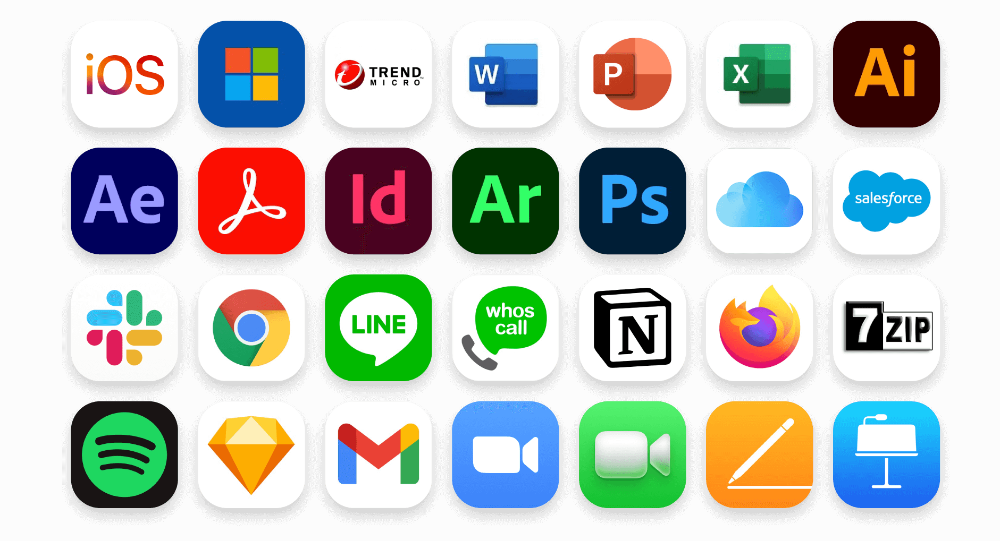
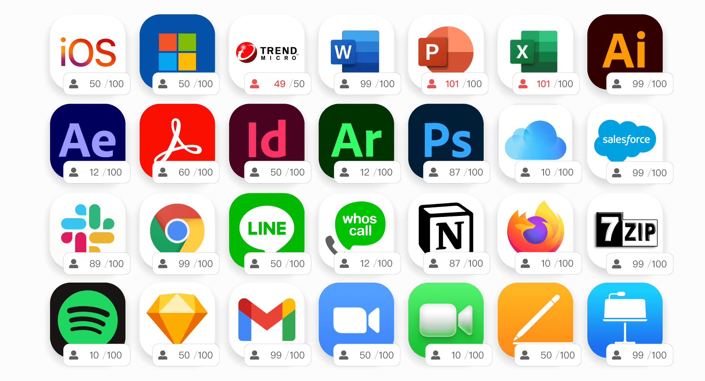
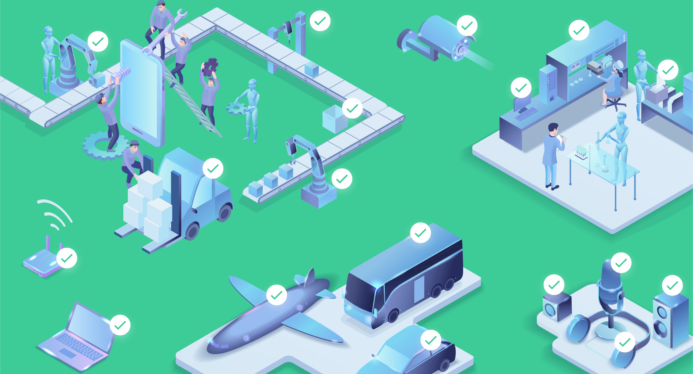

應用程式盤點
系統可自動將使用者安裝的應用程式紀錄成冊，應用程式的版本、型號、安裝時間等資訊統計為報表

問題情境
- 狀況一、當公司內部多台機器及電腦當機無法使用，網管人員察覺內網中的電腦中毒並在區域內互相感染
- 狀況二、員工向網管人員反映網速很慢，但原因不明
- 狀況三、公司內部設備隱含感染勒索病毒的風險
常見原因
- 員工自帶未更新設備進入公司並連上內網
- 白名單設備中毒並帶病毒進入內網
- 訪客、廠商電腦並未定時、即時更新
解決方案
- 可整合 AD、GPO、WSUS、防毒軟體等系統進行應用程式盤點，確保即將進入內網的設備有定時更新及掃毒。
- 將未符合管理者規則之設備暫禁連網，並確保其完整更新後，方能恢復正常網路功能 。
- 新的病毒碼發布或是提供更新時，確認公司內部的電腦有即時更新，尤其有資安疑慮的以致於需要強制更新的版本，可依據網管人員提供之病毒碼更新版本，要求使用者符合規定後方可連網。

License 盤點
系統可自動盤點公司所採購的應用程式的證照、使用的場所、使用的人數、是否非法使用。

問題情境
- 訪客與廠商來訪時需連上內網，手動派發將耗時費力
- 重要設備發生 IP 突會導致無法連網使用
- IP 不夠用，無法自動回收
- 無法快速知道還未被使用過的 IP
常見原因
- 網管人員花費時間手動派發固定 IP 給合法設備，但熟悉網路設定的員工可自行更改 IP 以規避政策，連上公司內部網路
- 有陌生設備及員工自帶設備，可能造成重要設備無法使用的風險。
解決方案
- DHCP 自動派發 IP，減少人員工時以及人工不可預期的錯誤
- 可整合驗證授權機制自動核發 IP，以達到使用者和連線設備相關資訊透明化，並確保設備的連線能力。
- 進階的 DHCP+，幫助管理者直覺、彈性地設定 IP 核發政策，並可視核發對象設定 IP 租期，方便廠商及訪客暫用公司網路，並於期限到時自動回收IP。
設備盤點
系統可自動盤點公司所採購的硬體設備，確認是否符合規定

問題情境
- 重要設備發生狀況時，等到停擺數分鐘後才被人發現
- 員工電腦中毒，感染多台設備之後才被發現，而後還花費大量時間尋找原因
- switch 異常關閉，導致其下的設備皆無法使用
- 員工無法上網，網管人員發現該設備所處的子網路位置錯誤
- 員工電腦中毒亂發封包，導致網速緩慢
- 擁有多處外點辦公室或廠房，造成設備難以察找
- 各種問題查找困難且費時
常見原因
- 網路線亂接導致內部網路封包數量異常或無法上網
- 公司員工自行更改 IP 導致衝突，使重要設備離線無法使用
- 設備網路線接錯位置、IP 衝突、IP 派發來源錯誤等等設備斷線原因
解決方案
- 自動偵測設備的 IP、設備、位置、事件等完整資訊，且可以整合資產管理系統，支援擴充欄位，系統資料一覽無遺。
- 偵測串接埠後自動產出拓樸圖，完整畫出管理範圍內結構並標示出各 Port 流量。能掌握每台設備介接的位置，若有設備故障可快速找到該設備位置
- 自動告警重要設備離線、內網封包量異常、IP衝突等事件。若有未納管之設備於內網存在，可於主機列表中第一時間發現，並了解該設備位置